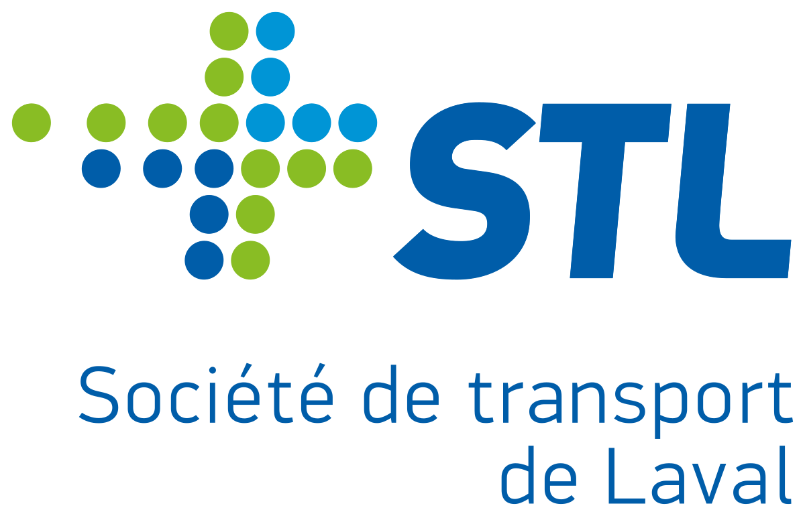
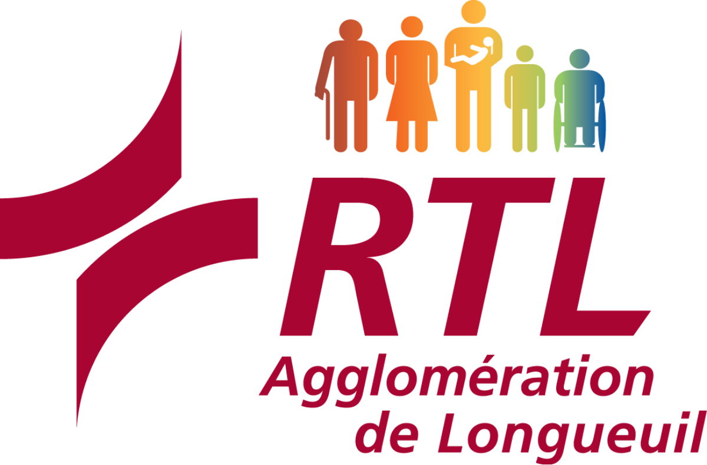

PUBLIC TRANSIT
 (1).jpg)
Public transit in Montreal has become part of the city's culture, shaping daily life and urban identity. The metro's colorful stations reflect local art and history, while buses connect diverse neighborhoods. So many people rely on the city's transit, making it more than just transportation—it's something that brings the city together.


Montreal has a few different public transit companies that work together to help people get around the city and nearby areas. The STM runs the buses and metro in Montreal. Exo, which used to be called RTM, runs commuter trains and buses in places like Terrebonne. ARTM helps plan everything and makes sure the fares are fair and work across different systems. There's also the REM, a new light rail system that's being built to make it easier and faster to travel between downtown and the suburbs. All these services help people stay connected across the region.